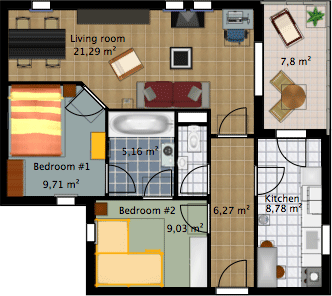

Pour éditer les préférences de Sweet Home 3D, choisissez Sweet Home 3D > Préférences... sous
macOS ou Fichier > Préférences... sous les autres systèmes d'exploitation.
Dans le panneau des préférences, la liste déroulante Langue vous permet de choisir la langue utilisée dans l'interface utilisateur
de Sweet Home 3D et le bouton à sa droite d'importer des fichiers de langues avec une extensions SH3L.
La liste déroulante Unité vous permet de choisir l'unité utilisée
pour dessiner les règles et la grille du plan du logement, ainsi que pour afficher les longueurs et les aires.
Pour le système métrique, vous pouvez choisir le Millimètre,
le Centimètre ou le Mètre, et le système impérial propose les quatre unités suivantes :
l'unité Pouce/Décimales qui affiche une longueur seulement en pouces suivie des décimales de pouce, comme dans 250,122",
l'unité Pied/Décimales qui affiche une longueur en pieds suivie des décimales de pied, comme dans 3,1',
l'unité Pouce/Fraction qui affiche une longueur en pouces suivie de la fraction d'un huitième de pouce la plus proche,
comme dans 15⅛", et l'unité Pied/Pouce/Fraction qui affiche une longueur en pieds et pouces suivie de la fraction d'un huitième de pouce la plus proche,
comme dans 20'10⅛". Dans le dernier cas, une partie fractionnaire saisie avec des décimales et une valeur en pouce supérieure
ou égale à 12 seront automatiquement converties ; par exemple, si vous saisissez 15,75, le programme comprendra 1'3¾",
et pour 2'15, ce sera interprété comme 3'3". Vous pouvez utiliser aussi le symbole / dans la fraction après une valeur en pouce,
comme dans 1 3/4, que le programme interprétera comme 1¾". Pour les aires, les unités Pouce/Fraction et Pied/Pouce/Fraction affichent toujours
la valeur la plus proche en pieds carré, tandis que l'unité Pouce/Décimales affiche des décimales
si besoin.
La liste déroulante Devise permet de choisir la devise pour les prix du mobilier. Quand une devise est choisie à place
de l'option par défaut Ignorer les prix, il est possible de saisir un prix dans le panneau de modification des meubles,
d'afficher la colonne Prix dans la liste des meubles et d'obtenir le total des objets qui ont un prix sous cette liste.
Si l'option Utiliser la TVA est sélectionnée, les prix des meubles s'entendent alors Hors Taxe, et il est possible de
saisir un taux de TVA dans le panneau de modification des meubles et d'afficher les colonnes supplémentaires % TVA,
TVA, Prix TTC dans la liste des meubles.
Les boutons radio Dossiers de catégorie et Liste avec recherche permettent de choisir le mode d'affichage
du catalogue de meubles dans chaque fenêtre Sweet Home 3D.
La boîte à cocher Flèches de navigation 3D permet d'afficher ou non les boutons en forme de flèches d'aide
à la navigation dans la vue 3D.
Quand elle est activée, l'option Sélection et édition dans la vue 3D vous permet de manipuler les objets directement
dans la vue 3D, c'est-à-dire de selectionner les objets avec un simple clic, les modifier
avec un double clic, glisser-déposer un meuble pour le déplacer ou changer son élévation et ajouter un meuble avec un
glisser-déposer du catalogue sur la vue 3D.
Quand elle est activée, l'option Vue aérienne centrée sur la sélection centrera
la vue aérienne 3D sur les éléments sélectionnés dans le plan 2D.
Si aucun élément n'est sélectionné ou si cette option est désactivée,
la vue aérienne sera centrée sur le mileu du logement, qui peut changer en fonction de son contenu.
Quand elle est activée, l'option Sélection visiteur après mouvement 3D entraînera
une sélection et un affichage du visiteur virtuel dans le plan 2D à chaque fois que vous faites un mouvement
dans la vue 3D en mode Visite virtuelle. Désélectionnez cette option si vous ne voulez pas perdre
la sélection en cours dans le plan et/ou modifier la zone visible du plan à chaque mouvement dans la vue 3D.
La boîte à cocher Magnétisme active ou désactive le magnétisme utilisé dans le plan du
logement au cours du positionnement des meubles, et du dessin des murs, des pièces et des cotes.
Le bouton représentant un aimant dans la barre d'outils de Sweet Home 3D
permet aussi d'activer ou désactiver le magnétisme.
La boîte à cocher Règles permet de rendre visibles ou invisibles les règles affichées en haut et
à gauche du plan.
La boîte à cocher Grille permet de rendre visible
ou invisible la grille affichée sous le plan.
La liste déroulante Police par défaut permet de choisir la police de caractère utilisée
pour les textes affichés dans le plan (i.e. nom des meubles, nom et superficie
des pièces, longueur des cotes
et police par défaut des textes).
Les boutons radio Icônes du catalogue et Vue de dessus
permettent de choisir comment seront dessinés les meubles dans
le plan (voir les images ci-dessous). Quand l'option Vue de dessus est sélectionnée, la liste déroulante
Taille icônes vous permet de choisir la taille en pixel des icônes dessinées dans le plan 2D.
Une taille plus grande donnera un meilleur résultat dans les plans dessinés à l'écran, imprimés
et exportés au format SVG, mais requérera plus de mémoire pour fonctionner.
Les boutons radio Monochrome et Couleur ou texture
du plancher permettent de choisir si les pièces doivent être
remplies dans le plan avec la couleur ou de la texture que vous avez
choisies pour leur plancher, ou en gris (en blanc à l'impression).
La liste déroulante Motif des murs dans le plan permet
de choisir le motif de remplissage des murs dans le plan.
La valeur de l'Epaisseur des nouveaux murs détermine l'épaisseur des murs qui seront créés
une fois que le panneau des préférences sera fermé.
La valeur de la Hauteur des nouveaux murs détermine la hauteur des futurs murs.
La valeur de l'Epaisseur des nouveaux planchers détermine l'épaisseur des planchers des futurs niveaux.
Si elle est sélectionnée, l'option Vérifier les mises à jour au lancement du programme vérifiera si des mises
à jours de Sweet Home 3D sont disponibles ou non à chaque fois que le programme est lancé,
et affichera des informations sur celles-ci dans une boîte de dialogue. Cette option vérifie aussi la disponibilité
de mises à jours pour les bibliothèques de meubles (fichiers SH3F), les bibliothèques de textures (fichiers SH3T),
les fichiers de langues (fichiers SH3L) et les plug-ins (fichiers SH3P) que vous avez installés, en fonction de
leur configuration.
La valeur du champ associé à la boîte à
cocher Enregistrer les données de récupération
détermine le délai en minutes qui s'écoule entre
deux enregistrements des logements ouverts. Ceux-ci sont automatiquement
enregistrés dans des fichiers privés, qui seront utilisés
à des fins de récupération au prochain lancement
de Sweet Home 3D si le programme plante.
Finalement, le bouton Réinitialiser l'affichage des conseils
réinitialise les réponses que vous avez données
aux boîtes à cocher Ne plus afficher ce conseil
affichées dans les conseils qui apparaissent quand vous cliquez
sur certains outils. Ceci implique que tous les dialogues où
vous avez coché cette option réapparaîtront au moment où
vous cliquerez à nouveau sur ces outils.
|
|
 |
Rendu du plan avec les icônes du catalogue,
les planchers monochromes et les murs hachurés |
Rendu du plan avec les meubles vus de dessus,
les planchers colorés, et les murs en noir |
|